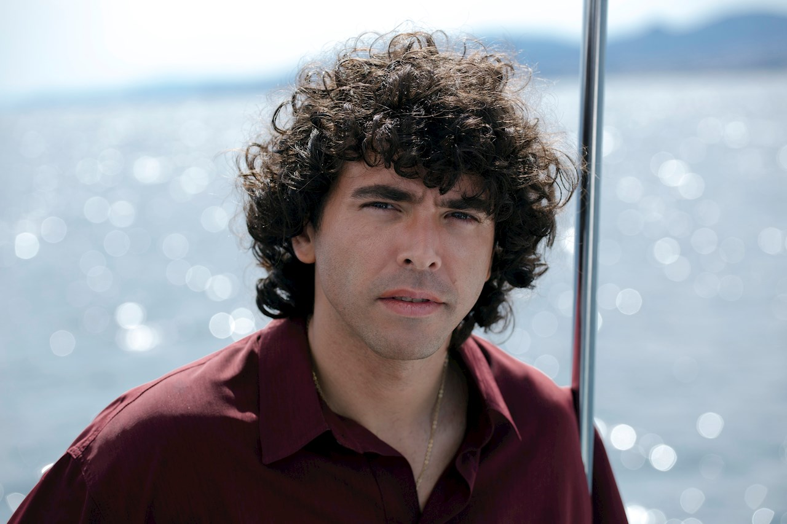
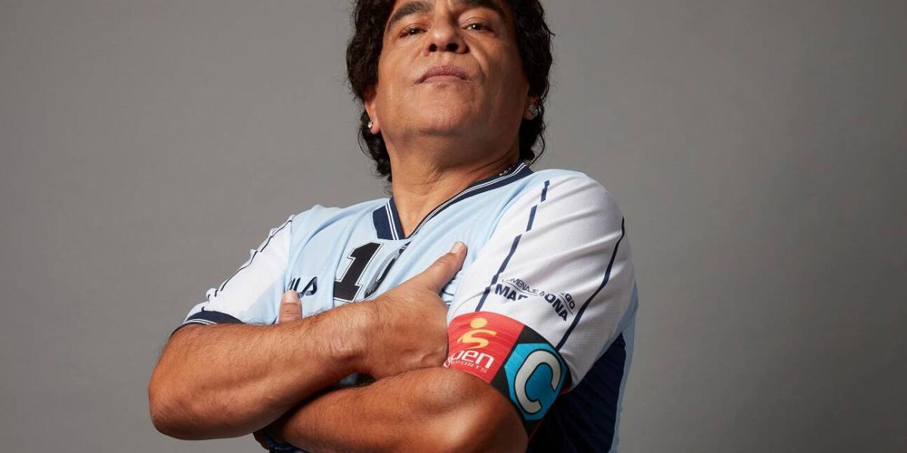

Maradona, sueño bendito es una serie de televisión web argentina del 2021, del género biografía y drama, sobre la vida del futbolista Diego Maradona emitida por la plataforma de video bajo demanda Amazon Prime Video y secundariamente por el canal de televisión de aire El Nueve, producida por BTF Media, Dhana Media y Latin We, y distribuida por Amazon Studios.

El 28 de octubre de 2021 se realizó la avant premiere que consistió en una transmisión especial por Canal 9 del primer capítulo de la serie "Promesa", desde la cancha de Argentinos Juniors, donde Maradona hizo sus primeros pasos deportivos. El evento contó además con los protagonistas de la serie y con música en vivo donde destacaron Valeria Lynch interpretando "Me das cada día más", canción asociada a Maradona, y Juanse interpretando "Para siempre Diego". El 29 de octubre de 2021 la serie se estrenó oficialmente a través de la plataforma Amazon Prime Video, donde se publicaron los primeros cinco capítulos de la serie.
La serie sigue la vida del famoso futbolista argentino Diego Armando Maradona, en diferentes etapas de su vida, comenzando por los inicios de su carrera en Villa Fiorito y en Argentinos Juniors. Seguidamente, narrará su etapa de gloria con la selección argentina en la Copa Mundial en México '86 y en su paso por el Nápoles. Luego la historia se centrará en su tormentosa etapa adulta, contando su homenaje en La Bombonera en 2001, su dirección técnica en el Mundial Sudáfrica 2010 y sus escándalos mediáticos. Finalizando en una segunda temporada donde se contará su vuelta a la Argentina y posterior muerte.

Pulse el logo para ver la serie